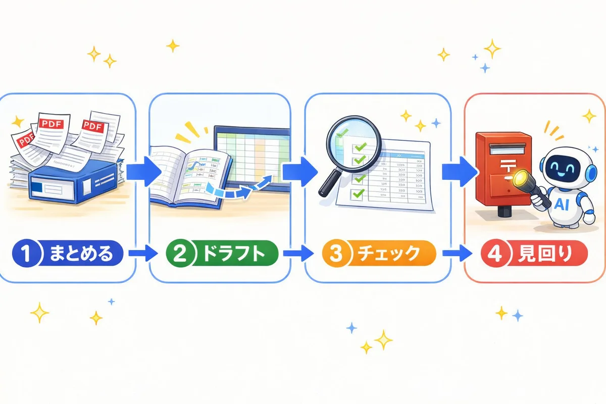
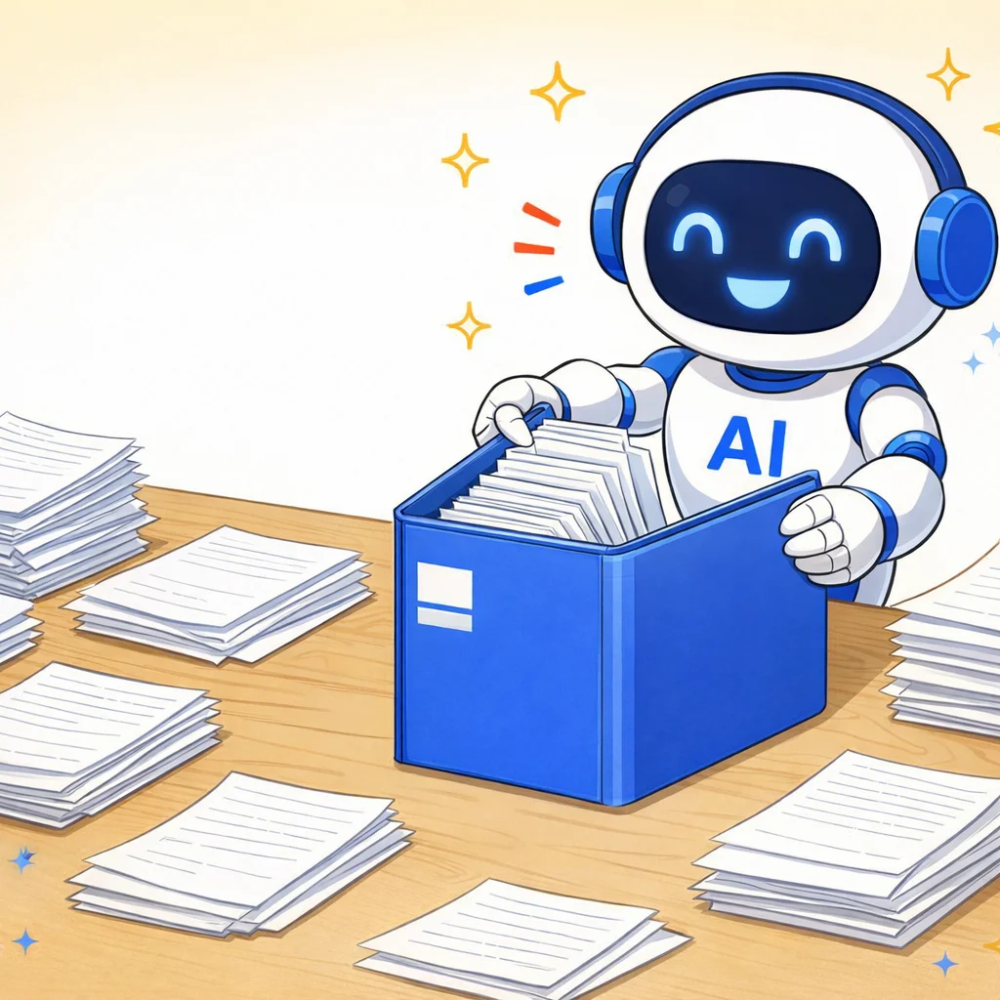
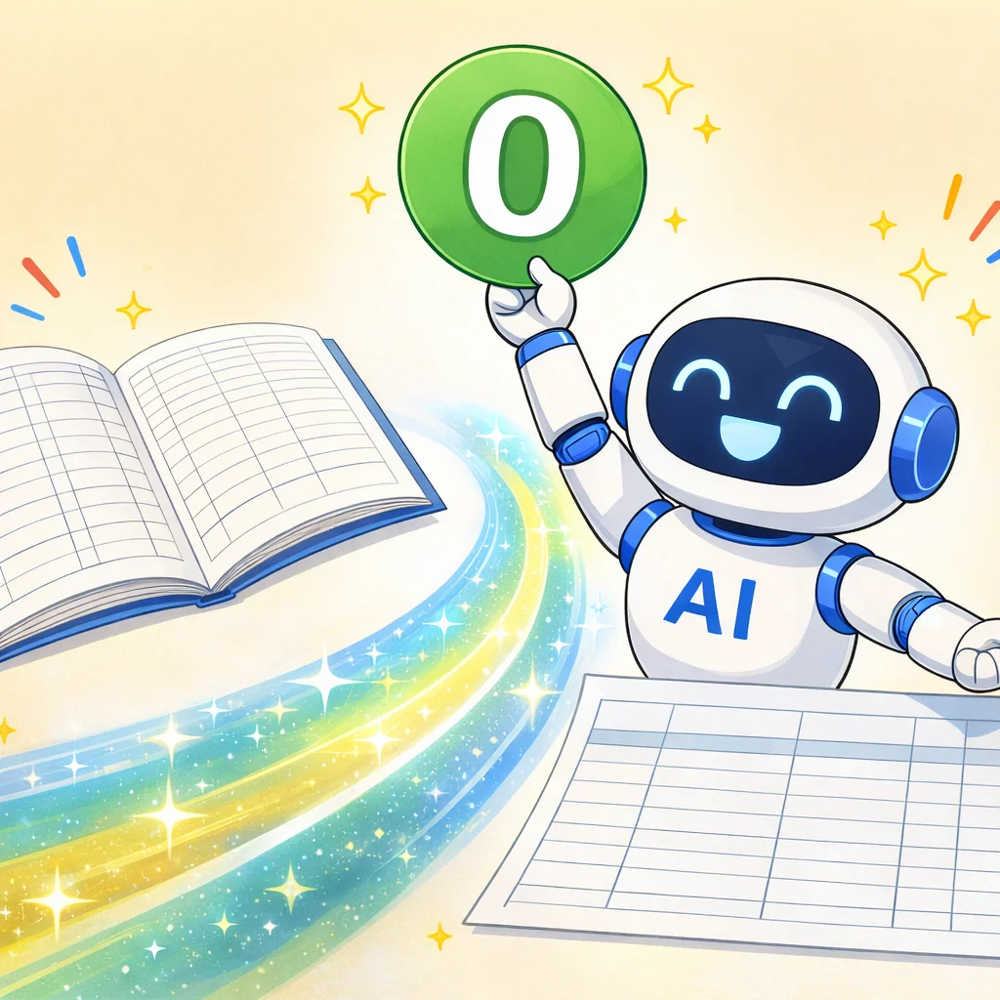

AIが申告書を作る日まで、
申告の「まわり」を全部任せる
起票は自動（第3回）、チェックも自動（第5回）、月次は自動で届く（第7回）。第9回のテーマは税務申告のAI自動化です。目指す世界ははっきりしています。AIが申告書を作り、人がチェックして署名する。ただ2026年8月時点では、申告ソフト側の入口（API）がまだ無く、申告書そのものはAIに作らせられません。だから今日は、その日が来たら即つながるように、申告書の前（内訳書などのデータ整理）と後（PDFの整理・提出前レビュー・提出後の管理）を先に固めます。ここが固まっているかどうかで、APIが来た日のスタートダッシュがまるで違います。
🎯 この課題を終えると…
- バラバラの申告書PDF一式を、正しい順番の1本に自動で結合・リネームできます
- 期末データから勘定科目内訳明細書のドラフトをAIに作らせられます
- 提出前の申告書を、チェックリストでAIにセルフレビューさせられます（AIは見張り役）
- e-Tax・eLTAXのメッセージボックスの棚卸しをAIと一緒に回せます
- 最後に確認テスト（AIが先生役・70点以上で合格）を受け、恩送りメモを投稿すると修了です🏅
👉 その前に、🧭 追いつき実力テスト（15〜20分）で今日の出発点を確かめましょう。つまずいていても大丈夫、戻り道を用意しています。

追いつき実力テスト：第7回に追いつけているか 🧭
第7回は月次ダッシュボード、第8回はその実践サポート回でした。今日はその内容が身についているかに加えて、「自分の顧問先で使ってみたか」まで点検します。学んだだけで止まっていても大丈夫。その場合は「今夜15分でできる、はじめの一歩」がフィードバックで出るようになっています。やることは2つだけ。下のコピペ文を貼る → 出てきた「結果票」をDiscordの当日スレッドに貼る。これで完了です。
今日の講義の前に「追いつき実力テスト」をします。あなたは試験官役です。
修正・登録は一切しないで、点検とテストだけしてください。
A. ダッシュボードの型（第7回）
.claude/skills/ に月次ダッシュボードのスキル
（monthly-dashboard など）はありますか？
あるかないかだけ判定してください。
B. 成果物（第7回）
「顧問先ダッシュボード」フォルダ（または相当のフォルダ）に、
ダッシュボードのHTMLや素材ファイルはありますか？
あるかないかだけ判定してください。
C. 会計ソフト接続（第1回・第3回）
freeeまたはMF会計のMCPは、いま接続されていますか？
接続できていれば事業所名を確認したうえで、
画面には「接続OK」とだけ書いてください。
D. ミニ実力テスト（第7回・第8回の内容・3問）
次の3テーマから、選択式（A/B/C）の問題を1問ずつ、
合計3問を順番に出して、私の答えを採点してください。
1問目: できあがったダッシュボードの数字を、会計ソフトの画面と
「1ヶ所突き合わせる」理由
2問目: 複数の顧問先を扱うとき、作業の前に「事業所名の確認」を
絶対に飛ばしてはいけない理由
3問目: 自動で動かしてよい範囲（読み取り・ファイル生成）と、
人が必ずやること（数字の確認・見せる判断）の線引き
E. 実務への落とし込み（第8回のあとの行動チェック）
次の2つを私に質問して、正直に答えてもらってください。
1問目: 配布データではなく「自分の顧問先（または自事務所）」の
月次ダッシュボードを、1回でも作ってみましたか？
2問目: ダッシュボードの中身（指標・グラフ・色など）を、
自分仕様に1ヶ所でも直しましたか？
あわせて、いま開いているフォルダに実践の痕跡
（顧問先フォルダ・自分用に直したスキルなど）があるかも見て、
答えと合わせて判定してください。
判定: ◎ 自分の顧問先で作り、自分仕様に育てている
○ どちらか片方はやった
△ まだ配布データのまま
最後に、次の形式の「結果票」だけをコードブロックで出してください。
事業所名・取引先名・金額・APIキーの値は絶対に入れないでください。
【追いつき実力テスト 結果票】
A ダッシュボードの型: あり ／ なし
B 成果物: あり ／ なし
C 会計ソフト接続: OK(freee／MF) ／ 要対応
D ミニテスト: ◯/3問 正解
E 実務への落とし込み: ◎ ／ ○ ／ △
総合: 🟢 追いつきOK ／ 🟡 あと少し ／ 🔴 今日はキャッチアップ
総合の判定基準：
Dが2問以上正解=🟢。Dが1問正解=🟡。それ以外=🔴。
（A・B・C・Eは総合判定に入れません。第9回はPDFとブラウザが主役なので、
接続が要対応でも今日の内容はほぼ進められます）
Eが○または△だった場合は、結果票の下に【はじめの一歩メモ】を
コードブロックで出してください。説教や一般論ではなく、
私の環境（使っている会計ソフト・フォルダの中身）を踏まえた
「今夜15分でできる宿題」を2つまで。
どのファイルを開いて・何を貼って・何ができたら完了かまで、
1つ3行以内で具体的に書いてください。
例:「自事務所の先月分で月次ダッシュボードを1枚作ってみる」
「ダッシュボードのグラフ色を事務所カラーに変えてみる」
このメモにも事業所名・取引先名・金額は入れないでください。
要対応があれば「どれを・どの順で・何分くらいで直せるか」だけ教えてください。
実際に直すのは、私がOKと言ってからにしてください。
👉 当日スレッドのリンクは配信時にご案内します（Discordの #課題 チャンネルをご覧ください）
- 貼るのは結果票のコードブロックだけ（ミニテストのやり取りや点検の途中ログは貼らない）。【はじめの一歩メモ】が出た方は、それも一緒に貼ってOKです
- 結果票もメモも事業所名・金額が入らない設計なので、そのまま貼って大丈夫です
- 🟡🔴や「E △」でもそのまま貼ってOK。どこで止まっているかの共有が、次の教材を良くします🌸
🛟 第7回・第8回に出られなかった方へ（戻り道）
- 第7回に出ていない → 第7回課題ページがそのまま自習用に使えます。ただし今日の内容は第7回が未了でも進められるので、まず第9回をやってから戻ってもOKです
- ミニテスト（D）で落とした → 1問目・2問目は第7回ステップ③とステップ④の安全メモ、3問目は第7回ステップ⑤が該当箇所です。今日の内容には支障ないので、そのまま進んでOKです
- MCPがつながっていない（C） → Claude Codeに「MCPの接続状態を確認して、再認証の手順を案内して」と伝えるのがいちばん早いです。今日はステップ③以外は接続なしで進められます
- まだ自分の業務で試せていない（E） → 落ち込まなくて大丈夫、ここからが本番です。テストが出してくれた【はじめの一歩メモ】の宿題を今夜1つだけやってみてください
🧭 結果票から、今日の進み方を決める
| 結果票 | 今日の進み方 |
|---|---|
| 🟢 追いつきOK | そのままステップ①へ。今日の主役はステップ④のセルフレビューと、ステップ⑤の棚卸しです |
| 🟡 あと少し | そのまま進めてOK。第9回はPDFが主役なので、第7回の完成度は問いません |
| 🔴 今日はキャッチアップ | 今日のステップ②（PDF結合）だけは体験してから帰るのがおすすめです。ブラウザとPDFだけでできて、効果が一番分かりやすいステップです |
| C（接続）が要対応 | ステップ③だけ、試算表・仕訳帳のCSVエクスポートで代替してください（やり方は各ステップに補足あり）。②④⑤は接続不要です |
| 会計ソフトが freee／MF 以外 | 今日はほぼ全部できます。②④⑤は会計ソフトを使いません。③もCSVが出せれば同じです |
- テストのコピペ文には「修正・登録は一切しない」の一文が入っています。消さないでください
- APIキー・トークンの値そのものは画面に出させないでください（「入っている／空です」だけで十分です）
- Discordに貼るのは結果票と【はじめの一歩メモ】だけ。ミニテストのやり取りには事業所名が混ざることがあります
配布キットを最新版にする 📦
いつもの習慣です。配布用リポジトリ（haifuyou）から最新の教材を取り込みます。第9回はこのページのコピペ文だけで完結するので、キットが最新でなくても先へ進めますが、更新の取り込みは毎回の頭で済ませておくのがおすすめです。
配布用リポジトリ https://github.com/fromk0326-boop/haifuyou から 最新の教材を取り込んでください。 お願いしたいこと： 1. 取り込みの前に、このフォルダにある私の変更をすべて コミットして保存する 2. 上書きではなくマージで取り込む （私が編集したファイルを勝手に消したり元に戻したりしない） 3. 同じファイルを私と配布側の両方が変更していた場合は、 両方の中身を見せて、どちらを残すか1件ずつ私に確認する 4. 終わったら「新しく増えたファイル」「更新されたファイル」 「私の変更がそのまま残ったファイル」を一覧で教えてください
申告書PDF一式を、正しい順番の1本にまとめる 📚

最初のステップは、申告が終わったあとの「あの地味な作業」です。決算書・法人税の別表・地方税・消費税・受信通知……申告書まわりのPDFはバラバラに出力されて、ファイル名も「印刷.pdf」「output(3).pdf」だったりします。これをAIに中身で分類させて、正しい順番の1本に結合・リネームさせます。会計ソフトも接続も不要。手元の申告済みPDFを1社分用意するだけです。
申告書PDFの整理をお願いします。元のファイルの修正・削除はしないでください。 対象フォルダ: （ここに申告書PDFが入ったフォルダのパスを貼る） 1社・1事業年度分の申告関係PDFが入っています。 1. 各PDFの中身を開いて確認して、次の5種類に分類してください。 A 決算書（貸借対照表・損益計算書・株主資本等変動計算書・個別注記表） B 法人税・地方法人税の申告書（別表） C 地方税の申告書（都道府県民税・事業税／市町村民税） D 消費税の申告書 E 電子申告の受信通知（メール詳細） どれにも当てはまらないPDFは「その他」として、理由付きで一覧に してください。ファイル名ではなく中身で判定してください。 2. 分類結果を表（ファイル名／分類／判定の根拠）で見せてください。 私が「OK」と言うまで、結合はしないでください。 3. OKと言ったら、A→B→C→D→E の順で1本のPDFに結合して、 「申告済み_申告書一式_（事業年度）_（法人名）.pdf」という名前で 同じフォルダに保存してください。事業年度と法人名はPDFの中身から 読み取って、読み取れなければ私に聞いてください。 4. 元のPDFは1つも消さず、そのまま残してください。
- 直近に申告した1社分がベストです。過去の年度でもOK
- 申告書PDFが手元にない方は、自事務所（自分）の申告書や、決算書＋受信通知だけの2種類でも分類→結合の流れは体験できます
- 並び順は畠山事務所の実運用と同じ「決算書→法人税→地方税→消費税→受信通知」です。事務所の並び順ルールがある方は、プロンプトの順番を書き換えてください
🛠 迷ったとき・トラブル
- パスワード付きPDFが混ざっている → パスワードの解除は自分の手でやってから渡してください（パスワードをAIに教えるのはNGです）
- スキャンPDFで中身が読み取れない → 「読み取れなかったファイルは、1ページ目の見た目の特徴を教えて」と頼むと、表紙の様式から一緒に分類できます
- 2社分・2年度分が混ざっていた → 「法人名と事業年度ごとにグループ分けして、それぞれ1本ずつにして」でOKです
勘定科目内訳明細書のドラフトを作らせる 🧾

次は申告の「前」の工程です。決算で地味に時間を食う勘定科目内訳明細書。あの転記作業の材料集めを、期末データからAIにやらせます。ポイントは「内訳の合計」と「B/Sの残高」を必ず並べて、差額ゼロを確認すること。合計が合わない内訳書は、内訳書ではありません。
freee MCPを使います。最初に、いま接続されている事業所名を確認して見せてください。 私が「その事業所でOK」と言ってから、次に進んでください。 OKと言ったら、直前の決算期（私が別の期を指定したらその期）の期末データから、 勘定科目内訳明細書のドラフト作りを手伝ってください。 1. 期末時点の貸借対照表の試算表を取得する 2. 次の科目について、内訳の材料を残高・仕訳から集める - 預貯金（口座別の期末残高） - 売掛金・未収入金（相手先別。データから分かる範囲で） - 買掛金・未払金・未払費用（相手先別。同上） - 借入金（借入先別） - 役員報酬・役員借入金（役員分） 3. 「内訳書ドラフト_（事業年度）.md」に、内訳明細書の様式に近い表で 整理して保存する。各表の下に「内訳合計」と「試算表のB/S残高」を 並べて、差額があれば差額の金額も表示してください。 全項目で差額ゼロが、このステップのゴールです 4. 相手先名がデータから分からないものは「（要確認）」と書いてください。 それらしい名前や金額で埋めるのは禁止です 大事なルール： - 数字の取得と整理だけしてください。修正・登録は一切しないでください - これはあくまでドラフトです。最終的な内訳書は私が申告ソフトで仕上げます
- MF会計の方：1行目を「MF会計（マネーフォワード クラウド会計）のMCPを使います」に変えるだけです
- 会計ソフトにつなげない方：期末の残高試算表と総勘定元帳（または仕訳帳）のCSVをエクスポートして、「このCSVを読み込んで、同じように内訳書ドラフトを作って」に置き換えれば同じ流れです（どの会計ソフトでもOK）
提出前の申告書を、AIにセルフレビューさせる 🔍
ここが第9回の本丸です。第5回で「帳簿のレビュー」をAIに任せましたが、今日は完成した申告書そのものを見張らせます。大事なのは役割分担。AIは作り直しも修正もしない「見張り役」で、チェックリストどおりに突き合わせて、事実だけを報告させます。不一致が正しいこともあるので、判定するのは税理士のあなたです。素材はステップ②で作った結合PDFがそのまま使えます。そしてこのチェックリストは、将来AIが申告書を作るようになったとき、そのまま「AIの成果物を人がチェックする台本」になります。今日作る型は、その日への先行投資です。
完成した法人税の申告書一式を、提出前のセルフレビューとしてチェックしてください。 あなたの役割は「見張り役」です。申告書を直したり作り替えたりはしません。 材料： - 申告書一式のPDF: （ステップ②で作った結合PDFのパスを貼る） - 期末の残高試算表: （ステップ③で取得済みのデータ、またはCSVのパス） 次のチェックリストを上から順に確認して、1項目ずつ 「一致 ／ 不一致 ／ PDFから読み取れず」で判定してください。 1. 決算書の当期純利益 と 別表四の一番上の「当期利益」は一致しているか 2. 別表四の留保欄の合計 と 別表五(一)の当期の増減は整合しているか 3. 別表五(二)の納税充当金の繰入額 と 決算書の未払法人税等の計上は 整合しているか 4. 住民税の均等割は12ヶ月分か （設立初年度・事業年度変更の場合は、月数の按分が正しいか） 5. 中間納付（法人税・地方税・消費税）は、各申告書に反映されているか 6. 消費税申告書の課税売上高 と 決算書の売上高は大きく食い違っていないか （食い違う場合は、考えられる理由の候補を挙げるだけにする。 非課税売上・輸出・税込税抜の違いなど。正誤の判定はしない） 7. 受信通知の税額 と 各申告書の税額は一致しているか 最後に、次の形式の「セルフレビュー結果票」だけをコードブロックで 出してください。金額・法人名は絶対に入れないでください。 【申告書セルフレビュー結果票】 1 当期純利益⇔別表四: 一致 ／ 不一致 ／ 読み取れず 2 別表四⇔別表五(一): 一致 ／ 不一致 ／ 読み取れず 3 納税充当金⇔未払法人税等: 一致 ／ 不一致 ／ 読み取れず 4 均等割の月数: OK ／ 要確認 ／ 読み取れず 5 中間納付の反映: OK ／ 要確認 ／ 対象なし 6 消費税⇔決算書の売上: OK ／ 要確認 ／ 対象なし 7 受信通知⇔申告書の税額: 一致 ／ 不一致 ／ 読み取れず 不一致・要確認: ◯件 不一致・要確認になった項目は、結果票の下に 「どの書類のどこを見て確認すべきか」だけを添えてください。 直し方や正しい数字の断定はしないでください。 大事なルール： - 「不一致＝間違い」とは限りません。判定と修正は私（税理士）の仕事です。 あなたは事実の指摘と、確認ポイントの提示までにしてください - 読み取れない項目を、推測で「一致」にするのは禁止です。 正直に「読み取れず」と書いてください
- Discordに貼ってよいのは金額の入らない結果票だけです（そのための様式にしてあります）
- このチェックリストは「よくある転記・反映ミス」を拾う網です。合格＝申告内容が正しい、ではありません。税務判断のレビューの代わりにはならない点だけ、忘れないでください
🛠 迷ったとき・トラブル
- チェック項目を足したい → 事務所のチェックリストがある方は、そのまま項目を追記してください。「事業税の損金算入時期」「繰越欠損金の残高」など、自分がよく確認する観点を足すほど強くなります
- 個人の確定申告でも使える？ → 使えます。「法人税の申告書」を「所得税の確定申告書」に変えて、チェック項目を「決算書の所得⇔申告書の事業所得」「予定納税の反映」などに置き換えてください
- 毎回このプロンプトを貼るのが面倒 → 第5回でやったのと同じ要領で「申告書セルフレビュー」スキルにできます。「このチェックの流れをスキルにして。説明は『申告書の提出前チェック。修正・税務判断はしない』で」と頼めばOKです
e-Tax・eLTAXのメッセージボックスを棚卸しする 📮
最後は申告の「後」、提出後の管理です。e-TaxとeLTAXのメッセージボックス、正直なところ開くのが億劫で溜まっていませんか。ここをAIとの分業で片づけます。分担はシンプル。ログインは人間（暗証番号はAIに渡さない）、開いたあとの読み取り・整理・仕分けはAI。今日は「スクリーンショットを貼るだけ」の一番かんたんな型でやります。
e-Taxのメッセージボックスの棚卸しを手伝ってください。
前提の確認：
- ログインは私が自分でやります。利用者識別番号・暗証番号は
あなたには教えませんし、入力もお願いしません
- あなたにお願いするのは、画面の読み取りと整理だけです
これから、メッセージボックスの一覧画面のスクリーンショットを
順番に貼っていきます（複数ページあることもあります）。
1. 貼った画像からメッセージを1件ずつ読み取って、
「日付／手続き名・表題／種別（受信通知・お知らせ・その他）／
既読・未読」の表に整理してください
2. 読み取りにくい行は、推測で埋めずに「（判読できず）」として、
その行だけ拡大スクショを私に頼んでください
3. 全ページ貼り終わったら「メッセージボックス棚卸し_YYYYMM.md」に
保存して、先頭に次のまとめを付けてください
- 未読の件数と内訳
- 対応が必要そうなもの（例: 納付関係、税務署からのお知らせ、
還付関係）のピックアップ
4. 「対応が必要そう」はあくまで仮の仕分けです。最終判断は私がします
- eLTAX（PCdesk WEB版）のメッセージ（申告受付通知など）も、同じプロンプトの「e-Tax」を「eLTAX」に変えるだけです。国税と地方税、両方のポストを同じ表に載せると抜けがなくなります
- 顧問先が複数ある方は、1社ずつログインし直して、ファイル名を「メッセージボックス棚卸し_会社名_YYYYMM.md」に分けてください。ここでも取り違えが最大の敵です
- ブラウザ連携（Chrome拡張など）を使っている方は、スクショの代わりに「いま開いているメッセージボックスの一覧を読み取って」でもOKです。その場合もログインと画面遷移は自分の手で行ってください
🚀 発展（紹介）：畠山事務所の「毎週金曜、勝手に届く」運用
今日やった棚卸しの完全自動版として、畠山事務所では毎週金曜の朝、顧問先全社のe-Taxメッセージボックスを自動で巡回して、新着だけをまとめたレポートがメールで届く仕組みが動いています。講義で実演したのはこれです。
- ログイン情報はパスワード管理ツールに保管して、AIのチャットやファイルには一切書かない設計です。ここを崩すと全部が台無しになります
- 自動巡回がやるのは「読み取ってレポートする」まで。メッセージを開いて対応するのは人です
- いきなりここを目指す必要はありません。まずは月1回、今日の型で棚卸しする習慣ができれば、溜まったメッセージボックスとはもうお別れです
- 利用者識別番号・暗証番号をAIに教えない・入力させない・ファイルやメモに書かせない。今日の型はそもそも渡さなくても回るように作ってあります
- メッセージボックスの画面には税額や識別番号が写り込みます。スクショを貼るのは自分のClaudeだけ。Discord・掲示板に貼ってよいのは「未読◯件を棚卸しした」という体験談だけです
税務AI自動化の現在地マップ（2026年8月時点）
最後に、今日の内容を地図に置いておきます。ゴールは「AIが申告書を作り、人がチェックして署名する」体制。そこに向けた2026年8月時点の現在地はこうです。
| ゾーン | 具体例 | 状態 |
|---|---|---|
| ✅ 今すぐ任せられる （今日やった範囲） | 申告書PDFの分類・結合・リネーム／内訳書ドラフト／申告書の突き合わせレビュー／e-Tax・eLTAXの棚卸し／帳簿側の消費税区分レビュー（第5回）／源泉所得税の納付書の集計（下の❓FAQ参照） | コピペ文だけで再現可能。今日の内容です |
| 🔜 もうすぐ解放される （本丸・API待ち） | 申告書の作成そのもの。freeeの申告機能のAPI公開が予定されていて、会計データ→申告書の作成→電子申告がAPIでつながると、いよいよ「AIが作って、人がチェックする」体制に入れます | 次回・第10回で、つながった状態の自動化を実演する予定です。今日固めた前後の型（内訳書・セルフレビュー・提出管理）が、そのまま受け皿になります |
| 🙋 AIが作る時代でも、 人がやること | 税務判断（役員給与・交際費・グレーゾーンの判定）／AIが作った申告書の最終チェックと署名／送信ボタンを押すこと／暗証番号の管理 | 作り手がAIに代わっても、チェックと署名の責任は税理士のもの。むしろ「AIの成果物を速く正確にチェックする力」が、これからの腕の見せどころです |
確認テストを受ける（合格すると恩送りメモが出ます）
ステップ①〜⑤が終わったら、Claude Code に先生役をお願いして、今日の理解チェックを受けてください。70点以上で合格（何回でも再挑戦OK）。合格すると、Claudeが今日の体験を1問ずつインタビューしてくれて、その答えがそのまま「恩送りメモ」になります。
第9回の課題（申告書PDFの分類・結合・リネーム／勘定科目内訳明細書の
ドラフト生成と差額ゼロ確認／申告書のセルフレビュー／e-Tax・eLTAXの
メッセージボックス棚卸し）の理解チェックをお願いします。
合格するまで、恩送りメモは出さないでください。
【テストの進め方】
1. この課題の内容から、選択式（A/B/C）のクイズを2問 → 自由記述
（自分の言葉で説明する問題）を1問、1問ずつ順番に出して。
「AIに任せてよい範囲（分類・整理・突き合わせ・読み取り）と、
人が必ずやること（税務判断・最終確認・送信・暗証番号の管理）の
線引き」に関する問題を必ず1問入れて。
2. 全部答え終わったら100点満点で採点して、点数と理由を短く伝えて。
3. 70点以上で合格 → インタビューへ。70点未満なら、間違えた所をやさしく
解説してから、別の問題でもう一度出して（何回でもOK・責めないで）。
4. 選択肢に「お任せ」は付けないで（自分で考えて答えるテストのため）。
【合格したら：インタビュー】
恩送りメモの中身は、あなた（AI）が想像で書かないでください。
私の体験を聞き出して、私が話した言葉だけで作ります。
次の5問を、1問ずつ・自由入力で聞いてください
（選択式にしない・まとめて聞かない）。
Q1. 今日いちばん時間がかかった／詰まったのはどこ？
そのとき画面には何と出ていた？
（エラー文・ボタン名・画面の名前は、思い出せる範囲でそのまま）
Q2. それはどうやって抜けた？（自分でやったこと、Claudeに何と頼んだか）
Q3. セルフレビューや棚卸しをやってみて「へえ」と思ったことは？
（不一致の発見でも、未読の多さでも、AIの読み取り精度でもOK。
顧問先名・具体的な金額は言わずに、「◯◯が思ったより多かった」の
ように抽象化して答えます）
Q4. あなたの事務所のセルフレビューに足した（足したい）チェック項目は何？
なぜそれを足そうと思った？
Q5. この課題ページで分かりづらかった所・直してほしい所はありましたか？
（1行でもOK・思いつかなければ『特になし』でOK）
インタビューのルール：
- 答えが短くても責めないで。ただし一言だけの答えには、1回だけ
「たとえばどんな場面？」と具体化を促して。それでも出てこなければ、
そのまま次へ進んで。
- 「思い出せない」「特にない」と言われたら、思い出す手がかりとして、
この課題で実際に起きがちな場面を3つほど挙げて「近いものはある？」と
聞いてOK。ただし当てはまらなければ「なし」のまま進めて。
私が言っていないことを、あなたが代わりに書かないで。
- 私の答えを、立派な文章に書き換えないで。言い回しは私のまま、
誤字と重複だけ直す程度にして。
【恩送りメモの出力】
インタビューが終わったら、「恩送りメモ」という見出しで、チャットから
そのままコピペできる1つのコードブロックとして出力して。
・1行目は必ず「確認テスト：◯点（◯回目で合格）」にする
・続けて、私がQ1〜Q4で話した内容を、話した順に体験談としてまとめる
・最後に、Q5の答えを「💬 課題ページへの改善案：」の行として原文のまま
入れる（『特になし』なら省略OK）
・長さは私が話した分だけでいい。8行に届かなくてもOK。足りないからといって、
私が言っていない体験・感想・エラー文を足さないで。盛るくらいなら短い方がいい
・私が挙げたエラー文・ボタン名・画面の名前は、要約で削らずそのまま残して
※ 顧問先名・取引先名・具体的な金額・事業所名・利用者識別番号・
暗証番号・個人情報・APIキーなどの秘密情報は、メモに絶対に入れないで
（「◯◯な明細で」のように抽象化して）。
最後に「このメモをコピーして、課題ページの『恩送りメモを投稿して修了』に
貼れば修了です🎉」と締めて。
恩送りメモを投稿して修了 🏅
確認テストの最後にClaudeが出してくれた「恩送りメモ」を、そのまま下に貼って投稿してください。投稿すると修了バッジが解放されます🎉 第9回のメモにはあなたの事務所のチェック項目の工夫が入っています。それが集まって、みんなの「申告前チェックリスト」が育ちます。
❓ よくあるつまずき
JDL・TKCなどインストール型の申告ソフトを使っています。AIで入力までできる？
源泉所得税の納付書（徴収高計算書）も自動化できる？
内訳書ドラフトの相手先が「（要確認）」だらけになった
受信通知のPDFってどこで手に入る？
e-Taxのスクショを貼るのがなんとなく不安
セルフレビューが全項目「一致」でした。もう安心していい？
途中で「使用上限に達しました」と表示された
🏅 修了バッジ：申告のまわりを固める人
5つのチェック＋恩送りメモの投稿がそろうと、ここで修了バッジが解放されます。
↑ 上に戻って進める